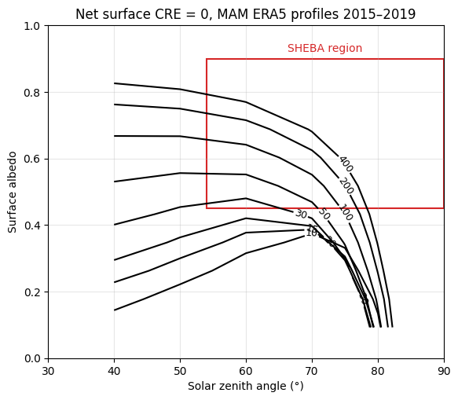

Reproducing Shupe & Intrieri (2004), part 2: seasonal ERA5 profiles#
Repeats Reproducing Shupe & Intrieri (2004) with ERA5 atmospheres instead of one standard atmosphere. The spring (MAM) profiles of 2015–2019 from ERA5 sea-ice profiles, binned by sea-ice cover, are passed as era5_atmosphere= (Atmosphere & ERA5). Each sea-ice bin gets its own surface albedo and temperature, so surface and atmosphere change together as they do in nature. It needs the file data/era5_sea_ice_to_libradtran.nc written by ERA5 sea-ice profiles.
The run takes about five minutes with 8 workers (about 700 simulations).
import logging
import matplotlib.pyplot as plt
import numpy as np
import pandas as pd
import xarray as xr
from matplotlib.patches import Rectangle
import pyradtran # registers the .pyradtran accessor
from pyradtran import Var
logging.getLogger("pyradtran").setLevel(logging.ERROR)
ERA5 profiles#
Mean temperature t (K) and specific humidity q (kg kg⁻¹) on 13 pressure levels for each sea-ice cover bin. The 1000 hPa temperature serves as surface temperature. It drops from about 271 K over open water to about 250 K over full ice cover.
profiles = xr.open_dataset("data/era5_sea_ice_to_libradtran.nc").sel(season="MAM", valid_time="2017-07-02")
t_surface = profiles.t.sel(pressure_level=1000)
t_surface.round(1).to_pandas()
/home/josh/.local/lib/python3.10/site-packages/tqdm/auto.py:21: TqdmWarning: IProgress not found. Please update jupyter and ipywidgets. See https://ipywidgets.readthedocs.io/en/stable/user_install.html
from .autonotebook import tqdm as notebook_tqdm
sea_ice_cover
0.05 274.799988
0.15 271.399994
0.25 270.600006
0.35 268.899994
0.45 267.399994
0.55 265.799988
0.65 264.799988
0.75 264.700012
0.85 262.799988
0.95 257.100006
Name: t, dtype: float32
Experiment#
Shortwave albedo: area-weighted mix of sea ice (0.9) and open water (0.05), \(\alpha = 0.9\,c + 0.05\,(1 - c)\) for sea-ice cover \(c\). Longwave emissivity 0.99 (
albedo0.01 in the thermal run).Cloud: homogeneous liquid layer from 0.3 to 1.0 km, 15 µm effective radius, LWC = LWP / 700 m (0.014–0.57 g m⁻³), as in Reproducing Shupe & Intrieri (2004).
SZA 40–85°, set through
params; the longwave run needs no SZA.
ALBEDO_ICE, ALBEDO_WATER = 0.9, 0.05
szas = np.array([40, 50, 60, 70, 75, 80, 85.0])
lwps = np.array([0, 10, 15, 20, 30, 50, 100, 200, 400.0]) # g m-2, 0 = clear sky
cbh, cth = 0.3, 1.0 # km
lwc = np.where(lwps > 0, lwps / ((cth - cbh) * 1000), np.nan)
ds = xr.Dataset(
coords={
"time": [pd.Timestamp("2024-04-15 12:00")],
"latitude": ("time", [78.0]),
"longitude": ("time", [0.0]),
"lwp": lwps,
},
data_vars={
"lwc": ("lwp", lwc),
"reff": ("lwp", np.full(lwps.size, 15.0)),
"cbh": ("lwp", np.full(lwps.size, cbh)),
"cth": ("lwp", np.full(lwps.size, cth)),
},
)
ds_solar = ds.assign_coords(sza=szas)
ds_solar["sza_deg"] = ds_solar.sza
cloud = dict(cloud_wc_var="lwc", cloud_reff_var="reff", cloud_top_var="cth", cloud_bottom_var="cbh")
run = dict(save_to_file=False, show_progress=False)
Run#
One solar and one thermal run per sea-ice bin, each with its own ERA5 profile.
cre_sw, cre_lw = [], []
for c in profiles.sea_ice_cover.values:
profile = profiles.sel(sea_ice_cover=c)
albedo = ALBEDO_ICE * c + ALBEDO_WATER * (1 - c)
solar = ds_solar.pyradtran.run(
config_path="config/arctic_cloud_experiment_solar.yaml",
params={"sza": Var("sza_deg"), "albedo": albedo},
era5_atmosphere=profile, **cloud, **run,
).isel(time=0, altitude=0)
thermal = ds.pyradtran.run(
config_path="config/arctic_cloud_experiment_thermal.yaml",
params={"albedo": 0.01, "sur_temperature": float(t_surface.sel(sea_ice_cover=c))},
era5_atmosphere=profile, **cloud, **run,
).isel(time=0, altitude=0)
net_sw = (solar.edir + solar.edn - solar.eup) / 1e3 # mW m-2 -> W m-2
net_lw = thermal.edn - thermal.eup
cre_sw.append((net_sw - net_sw.sel(lwp=0)).expand_dims(albedo=[albedo]))
cre_lw.append((net_lw - net_lw.sel(lwp=0)).expand_dims(albedo=[albedo]))
cre_sw = xr.concat(cre_sw, "albedo").drop_sel(lwp=0)
cre_lw = xr.concat(cre_lw, "albedo").drop_sel(lwp=0)
cre = cre_sw + cre_lw
cre_lw.round(1).to_pandas()
| lwp | 10.0 | 15.0 | 20.0 | 30.0 | 50.0 | 100.0 | 200.0 | 400.0 |
|---|---|---|---|---|---|---|---|---|
| albedo | ||||||||
| 0.0925 | 46.1 | 57.6 | 65.3 | 74.4 | 81.4 | 84.6 | 85.3 | 85.6 |
| 0.1775 | 46.0 | 57.3 | 64.9 | 73.7 | 80.5 | 83.4 | 84.0 | 84.2 |
| 0.2625 | 46.5 | 57.8 | 65.5 | 74.4 | 81.2 | 84.1 | 84.7 | 84.9 |
| 0.3475 | 46.3 | 57.5 | 65.1 | 73.9 | 80.6 | 83.4 | 84.0 | 84.3 |
| 0.4325 | 45.6 | 56.7 | 64.1 | 72.7 | 79.2 | 81.9 | 82.4 | 82.6 |
| 0.5175 | 45.5 | 56.4 | 63.8 | 72.3 | 78.6 | 81.2 | 81.6 | 81.8 |
| 0.6025 | 45.6 | 56.5 | 63.9 | 72.3 | 78.6 | 81.0 | 81.4 | 81.5 |
| 0.6875 | 45.4 | 56.4 | 63.7 | 72.1 | 78.4 | 80.8 | 81.2 | 81.4 |
| 0.7725 | 45.0 | 55.8 | 63.0 | 71.2 | 77.3 | 79.5 | 79.8 | 79.9 |
| 0.8575 | 44.6 | 55.2 | 62.1 | 70.0 | NaN | 77.3 | 77.4 | 77.3 |
Zero-CRE contours#
As in Reproducing Shupe & Intrieri (2004): each line is CRE = 0 for one LWP (label, g m⁻²); above a line that cloud warms the surface. The rectangle is the SHEBA region of Fig. 7 of Shupe and Intrieri (2004).
fig, ax = plt.subplots(figsize=(6.5, 5.5))
for lwp in cre.lwp.values:
cs = cre.sel(lwp=lwp).plot.contour(x="sza", y="albedo", levels=[0], colors="k", ax=ax)
ax.clabel(cs, fmt=f"{lwp:.0f}", fontsize=9)
ax.add_patch(Rectangle((54, 0.45), 36, 0.45, fill=False, edgecolor="C3", lw=1.5))
ax.text(72, 0.92, "SHEBA region", color="C3", ha="center")
ax.set_xlim(30, 90)
ax.set_ylim(0, 1)
ax.set_title("Net surface CRE = 0, MAM ERA5 profiles 2015–2019")
ax.set_xlabel("Solar zenith angle (°)")
ax.set_ylabel("Surface albedo")
ax.grid(alpha=0.3)

The saturated longwave CRE is larger over the open-water profiles (about 85 W m⁻² at LWP ≥ 100 g m⁻²) than over full ice cover (about 77 W m⁻²), and both exceed the 75 W m⁻² of the standard sub-arctic winter atmosphere in Reproducing Shupe & Intrieri (2004). The cloud layer sits in warmer air over open water and emits more. The one missing value (albedo 0.86, LWP 50 g m⁻²) is a failed uvspec run (status = 1).